Habitree — Native Habit-Tracker App
Role: UX/UI Designer & Researcher · Duration: July–August 2025 · Tools: Figma, FigJam, Miro, Google Forms, Canva
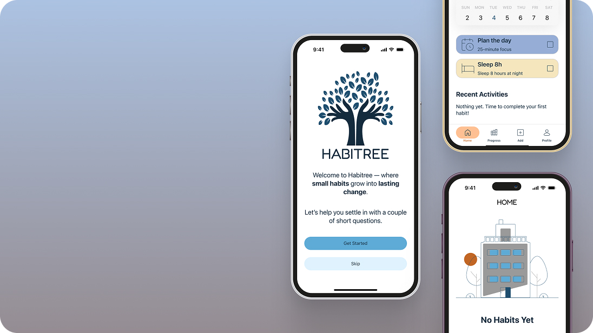
HABITREE is a cross-platform mobile app that helps users build healthier routines through mindful habit formation. Designed for both iOS and Android, it offers a calming, intuitive experience that encourages consistency without stress or guilt. In fact, it grew from a simple idea: what if building habits felt calm instead of pressured?
Target Audience
Through early research, I realised many users felt guilty when they couldn’t keep up with streak-based apps. I wanted to create a tool that nurtures users' progress - like watching a tree grow, one mindful step at a time. It focuses on adults aged 20–40, often students or professionals, who are motivated to improve their well-being but feel overwhelmed by rigid productivity tools.
Project Timeline
The process followed the double-diamond model, evolving through exploration, definition, ideation, and testing. Each phase shaped the next — from user pain points to refined cross-platform prototypes.
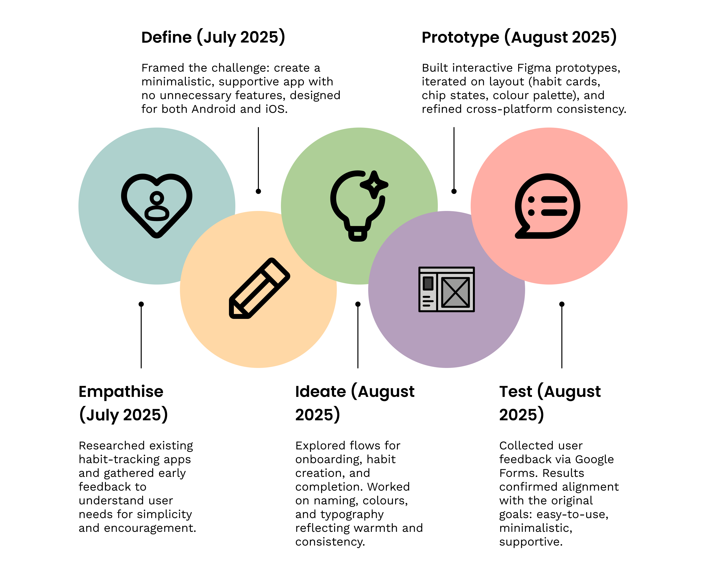
User Personas
Through careful research I have curated user personas that reflected different motivations and challenges - from busy professionals to students seeking balance. This helped ensure the design remained flexible enough for different lifestyles and daily rhythms.
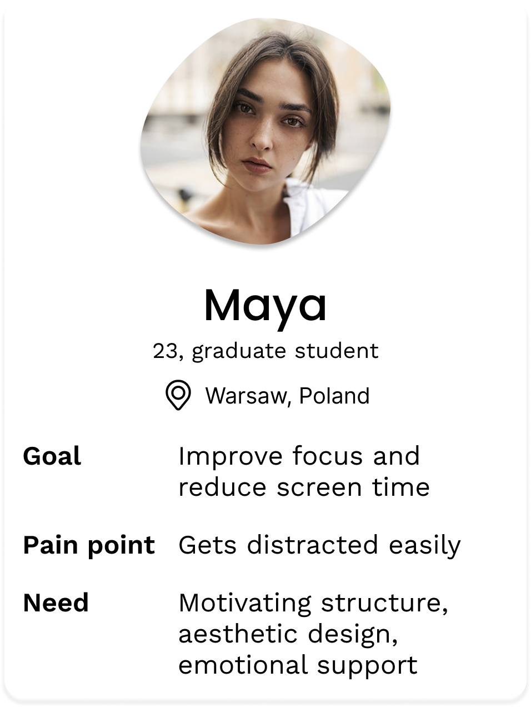
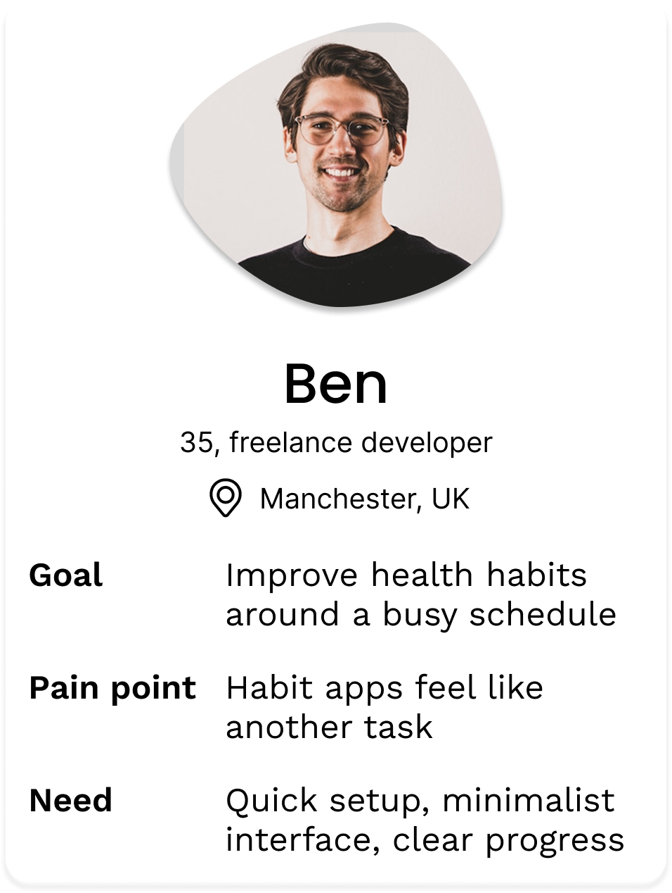
User Flows
Mapping user journeys revealed where complexity could be simplified. The focus was on reducing friction — so starting or tracking a habit always felt intuitive and rewarding.
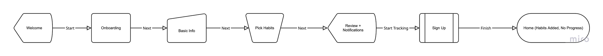
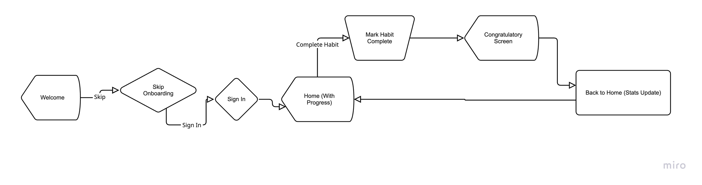
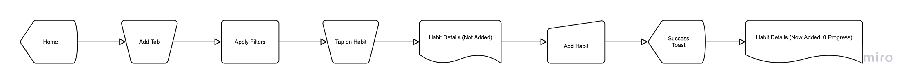
Understanding the Problem
My research uncovered a common frustration: users wanted motivation, not pressure. That insight became the foundation for Habitree’s visual calm, supportive copy, and uncluttered navigation.
Problem
Most habit trackers emphasize productivity over well-being. They often rely on streak pressure and overwhelming data, making users feel discouraged after a missed day.
Objective
Design an experience that motivates users to build daily habits in a more compassionate, human-centered way — with simplicity, ease of use, and visual encouragement at the core.
Solution
A mobile habit-tracking app that allows users to set small goals, select supportive habits, and visualise their progress through a growing tree metaphor — turning daily actions into long-term growth.
Supported Habit-Building Experience
The shared-device concept symbolises support and accountability — two people growing habits side by side. It reinforces the idea that self-care doesn’t have to be solitary.
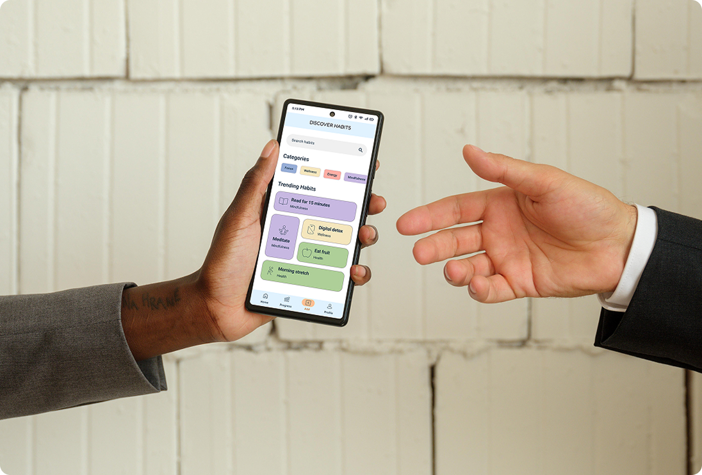
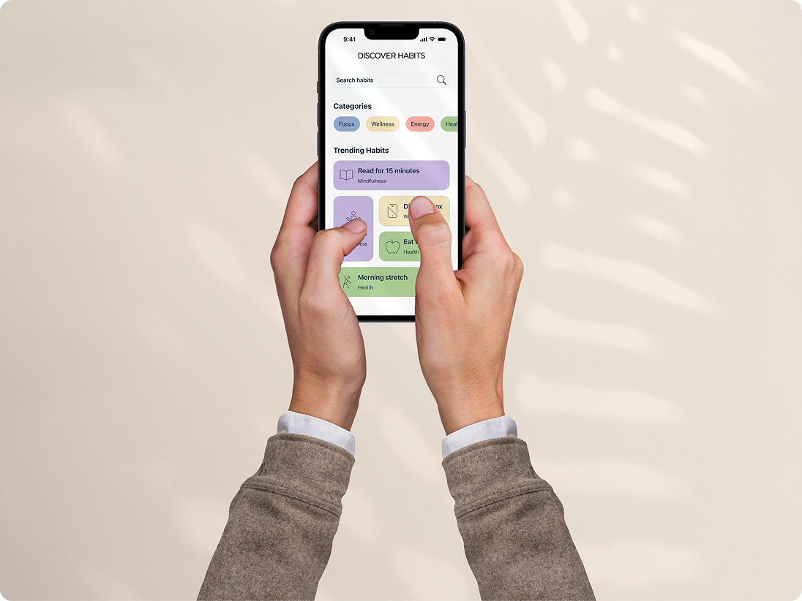
Screen Evolution
Designing for both iOS and Android at once was a creative challenge. It taught me how one design system could flex to reflect each platform’s native character while staying consistent in feel.
iOS Home — Low-fidelity
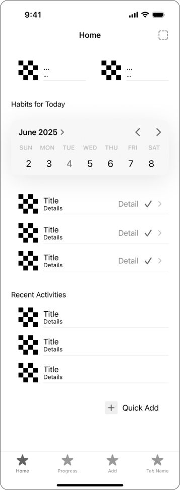
iOS Home — High-fidelity
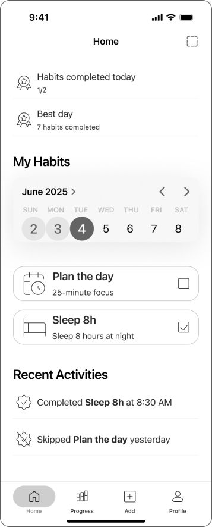
iOS Home — Mockup
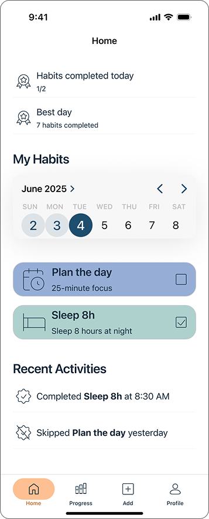
iOS Progress — Low-fidelity
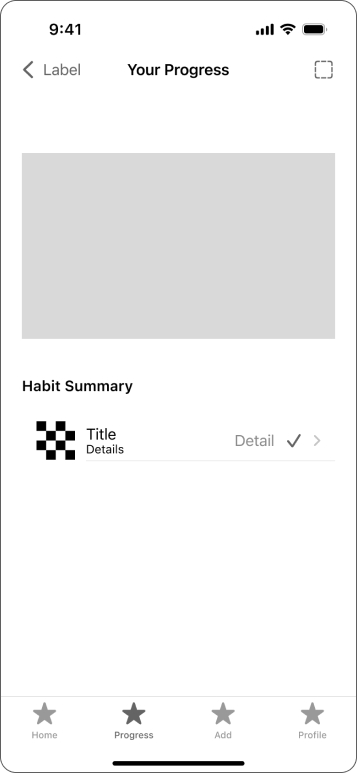
iOS Progress — Hi-fidelity
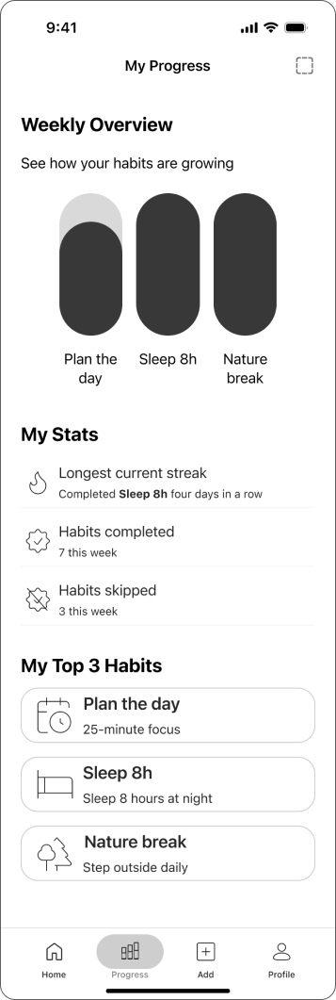
iOS Progress — Mockup
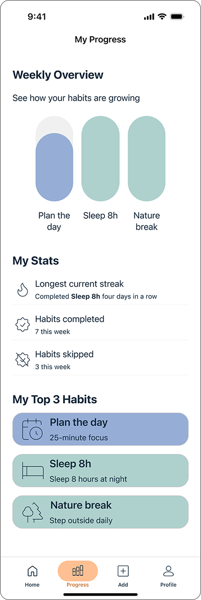
Android Home — Low-fidelity
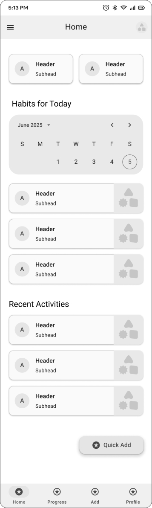
Android Home — High-fidelity
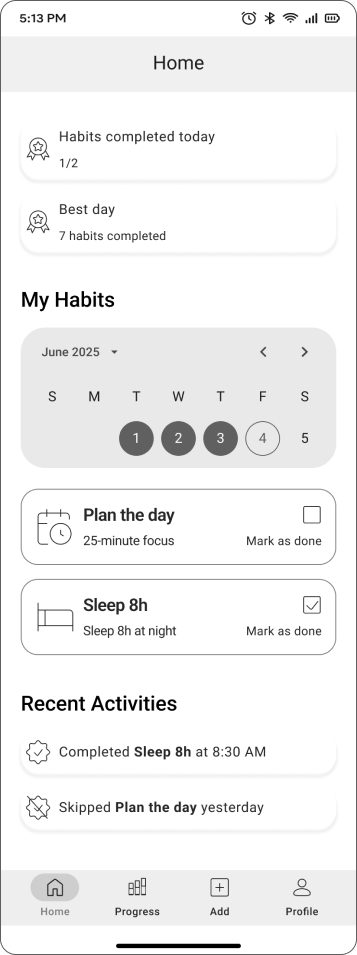
Android Home — Mockup
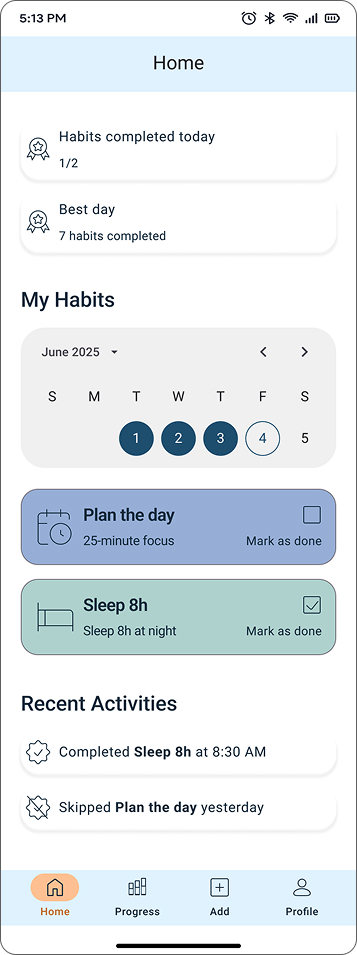
Android Progress — Low-fidelity
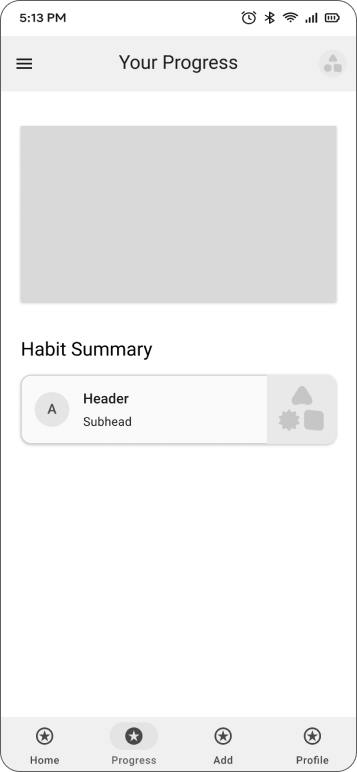
Android Progress — High-fidelity
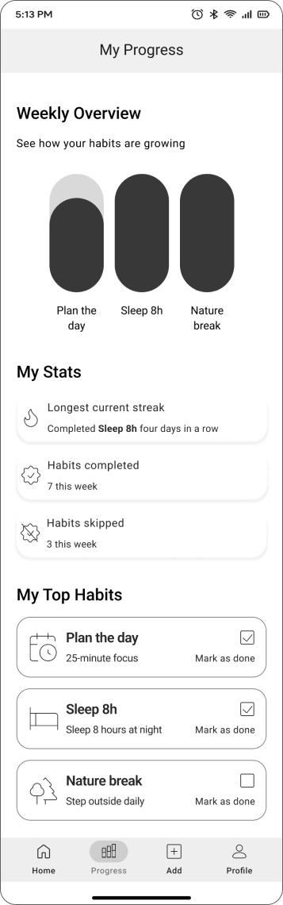
Android Progress — Mockup
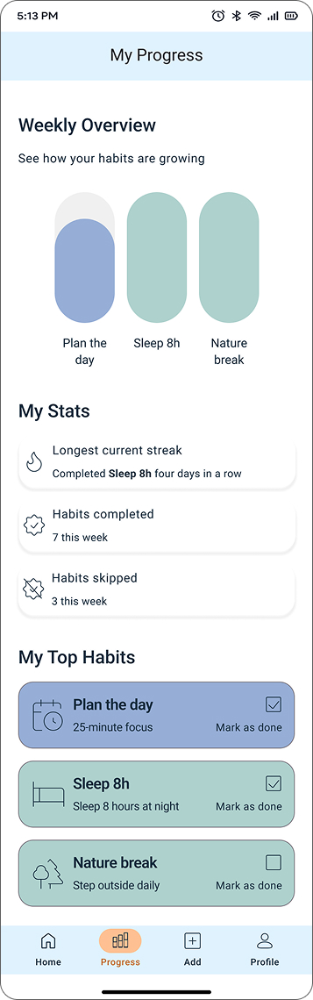
Prototyping
I created and tested interactive flows for onboarding, habit creation, and completion. User feedback confirmed that the minimal, warm aesthetic supported focus and reduced cognitive load.
Insights & Learnings
This project taught me how to balance consistency across platforms with visual individuality. Feedback validated the design’s clarity and emotional tone — and hinted at exciting opportunities for social growth features.
What went well
Designing for both iOS and Android was a rewarding challenge. User feedback matched my initial goals.
What could be improved
Working on both platforms simultaneously added complexity. Involving target users earlier could help.
Future development
I'd explore adding social features and more adaptive UI solutions.
Final Mockup
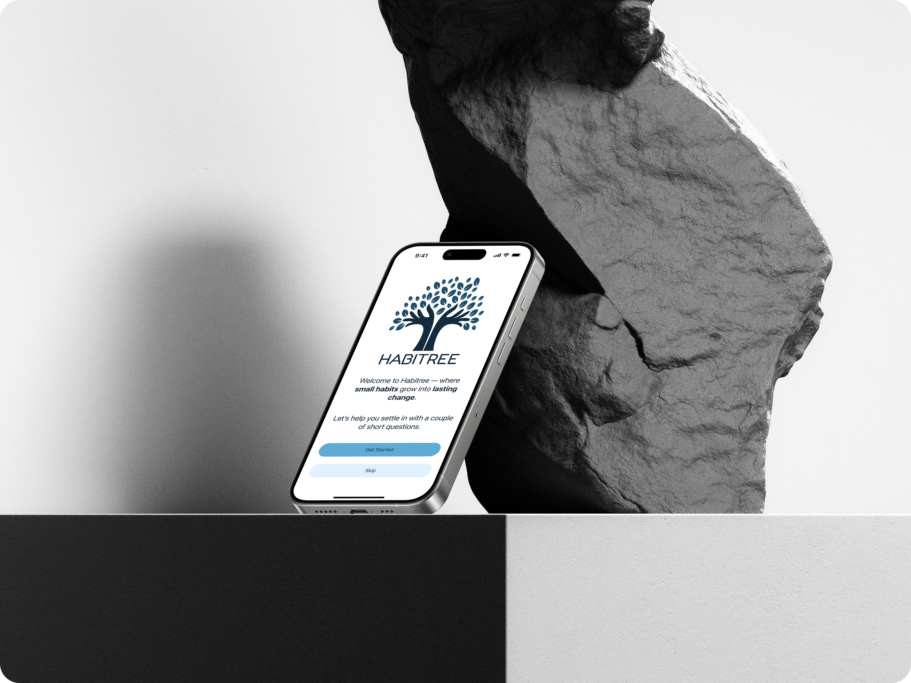